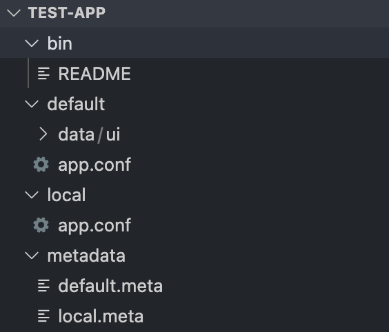

Splunk Custom Search Command 개발 - (1)
Splunk 를 사용하면서 큰 장점 중 하나로 생각했던, Custom Search Command 에 대해 포스팅하고자 합니다.
해당 기능을 통해서는 아래와 같은 스플렁크 앱 개발은 물론 다양한 아이디어 적용이 가능합니다.
1. ElasticSearch API를 이용하여 ES의 Data를 Splunk로 Integration |
이번 포스팅은 아래와 같이 3개의 주제로 나눠서 게시될 예정입니다.
- Custom Search Command 란? -
이번 게시물 - Kaggle dataset download 앱 개발해보기
- Event별 _time 관리 / time range 입력받기 / 명령어 도움말 관리
intro
저는 업무에서 다양한 Custom Search Command 을 만들어봤었습니다.
제일 처음 만들어봤던 앱은 예시 1의 내용인 ElasticSearch API를 이용하여 ES의 Data를 Splunk로 Integration 하는 Command 였었습니다.
당시 저는 Splunk 의 라이센스 부족에 힘들어 하며…
ElasticSearch로 부족한 인덱싱을 메우고 있었습니다.하지만, 생각보다 ElasticSearch의 Alert 기능이나 실제 로그를 검색하는 사용자들의 Web UI 편의성 (Kibana.. Lucene.. Aggregation을 위해서는 DSL 까지..)이 떨어져서 고민을 하고있었는데, 그에 딱 들어맞는 해결책이
Splunk Custom Search Command였습니다.앱 개발을 통해 ElasticSearch에 (무료로) Indexing 된 데이터를 스플렁크로 고스란히 가져와 스플렁크의 강력한 통계 SPL들은 물론 모두 사용할 수 있었고 Dashboard 와 Alert 기능등도 활용하며, 필요하다면 특정 로그들은 스플렁크 summary index로 다시 collect 할수도 있었습니다.
일단 하나를 만들어보니 그 이후로는 필요한 명령어들은 쉽게 만들 수 있었습니다.
스플렁크 기본기능으로는 힘든 문제도 Custom Search Command의 개발로 간단하게 해결할 수도 있었습니다.
DB Connector(DBX)에 mongoDB 기능은 포함되어 있지않아서 mongoDB로 Splunk 데이터를 밀어넣는 앱을 개발한다거나, |
Splunk는 docs 와 community 가 잘 되어있기는 하지만, 그 당시 Custom Search Command는 비교적 부족한 부분도 있었던거 같습니다..
(특히 App별 Python Package 관리 및 _time, _raw 등 internal field에 대한 정의의 설명 부족)
이 글은 보시는 분들도 아직 Custom Search Command를 개발해 사용해보시지 않았다면, 이 기능을 통해 더 넓은 Splunk의 활용에 도움이 되었으면 좋겠습니다.
Custom Search Command 란?
v1과 v2의 차이
Custom Searach Command의 버전은 v1 protocol과 v2 protocol가 있습니다.
단순하게 v1은 기존 버전 v2 개선된 버전이라고 보시면 됩니다.
차이는 아래와 같습니다.
v1 protocol
초창기 버전, intersplunk.py 라는 이전 SDK 를 통해 개발합니다.Splunk 3.0 이후 부터 사용 가능합니다.
대용량 데이터 처리를 위해서는 v2가 더 효율적입니다.
python 에 대해서만 지원하고,
간단한 명령어를 만들기에 적합합니다.
v2 protocol
Splunk 6.3 이후 부터 사용 가능합니다.
대용량 데이터 처리에 있어 v1 보다 runtime 오버헤드가 크게 줄어들었다고 합니다.
python 뿐만 아니라, Go, java, C++ 도 지원 한다고 합니다. (저는 파이썬으로만 개발해봐서 상세 내용은 모르겠네요.)
v2의 경우 아래의 4가지의 타입의 Splunk 명령어를 미리 인터페이스화 해놨습니다.
즉, 4가지 중 만들고자 하는 타입의 Class 를 상속받아 구현하면 됩니다.
| Command Type | Command Examples |
|---|---|
| GeneratingCommand | makeresults, inputlookup, inputcsv… |
| StreamingCommand | eval, fields, rename, where… |
| ReportingCommand | chart, timechart, stats, top… |
| EventingCommand | sort, dedup… |
각 타입에 매칭되는 SPL의 기본
Command Examples을 보시면, 각 타입이 어떤 역할을 하는 Command 인지 이해하시기 쉬우실 것 같습니다.Genarating : 말그대로 events 를 생성하고자 할때 사용합니다.
항상 SPL의 최초 파이프라인에서 실행되어야 합니다.
Streaming : events들을 one-by-one 으로 처리(변환 등)를 하고자 할때 사용합니다.
Repoting : Data table 형태로 만들어주고자 할때 사용합니다.
Eventing : Data set가 필요하며, 변환등이 아닌 odering과 같은 처리를 하고자 할때 사용합니다.내가 만들고자 하는 앱이 어떤 Type에 적합한지 확인하고,
거기에 맞는 Class를 상속받아 실제 코드를 구현하기만 하면 됩니다.
또한 Configuration Class와 Option Class도 제공해주는데, 이는 위와 같은 Commands를 만들다 보면 추가적인 설정이 필요해짐을 느낄때 찾아보시면 될것 같습니다. (ex, Streaming Command 를 만드는데 특정 변수를 각 indexer 끼리 shared 하고자 할때 Congifuration 어노테이션에 local=True)
App
App 은 Dashboard, Alert, Command 등을 포함할 수 있습니다.
저희가 만들 Custom Search Command 는 이 중 Command 부분입니다.
Splunkbase 등에서 앱을 설치하면 특정 SPL Command가 생기듯이, 저희는 App 구조안에 Command 만 만들어 볼 예정 입니다.
Custom Search Command 을 몇개 만들면서 사용해본 결과 하나의 App 안에 필요한 Command 등을 몰아넣고 배포하고 관리하는것이 더 편리하였습니다.
하나의 앱 안에 여러
Custom search command들을 개발하고 관리하는 기준으로 설명하도록 하겠습니다.
App 생성
일단 빈 App을 하나 생성해보겠습니다.
[Splunk] - [앱 관리] - [앱 만들기] - [기본적인 앱 이름 등 설정 후 템플릿은 barebones으로 만듭니다]
$SPLUNK_HOME/etc/app/
하단에 위에서 생성한 빈 App 이 생성 됩니다.
저는 Mac 환경에 Test App 이라는 앱을 생성했습니다.
App 구조
생성된 빈 Test App의 구조는 아래와 같이 되어있습니다.

생성해야할 파일은 아래와 같습니다.
- bin/“각 명령어 python 파일”
위에서 설명한 Type에 맞는 클래스를 상속받아 구현해야할 Python 코드입니다.
- default/commands.conf
[mycommand]
filename = mycommand.py
python.version = python3
chunked = true[mycommand] stanza가 SPL에서 사용된 명령어의 이름입니다. 즉 이렇게 작성하면 스플렁크에서
mycommand라는 명령어가 만들어지고, 이는 bin의 mycommand.py를 구동시켜 동작하게 됩니다.한 App 안에 여러 명령어를 만들고 싶다면 [command] stanza를 이 파일에 추가해주면 됩니다.
python 코드자체에 v1, v2을 체크하는 부분이 없기 때문에, commands.conf의 각 명령어 stanza에 chucked를 통해 v1과 v2를 정의해줘야 합니다.
chunked = true 일 경우 v2 protocol의 custom search command 입니다. - (옵션) default/searchbnf.conf
searchbnf.conf는 명령어의 사용법이나 example query등을 작성하여, Splunk 검색 길잡이에 표시되게 하는 설정 입니다. 잘 활용하면 사용자 편의성을 높일 수 있습니다.
3번째 Tip 포스팅에서 자세한 내용을 다루도록 하겠습니다.
다음 포스팅에서는 바로 실제 캐글의 데이터셋을 손쉽게 다운 받을 수 있는 Generating Custom Search Command를 만들어보겠습니다.